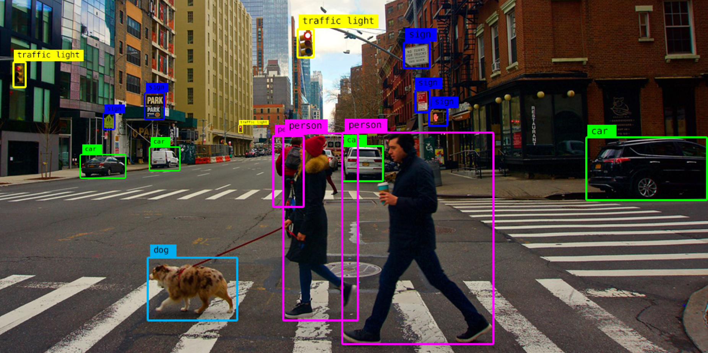
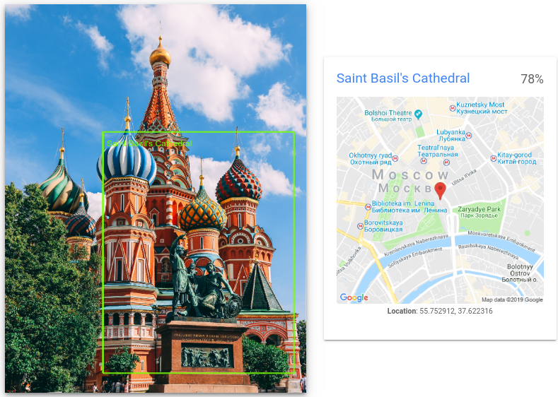
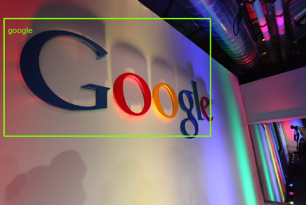
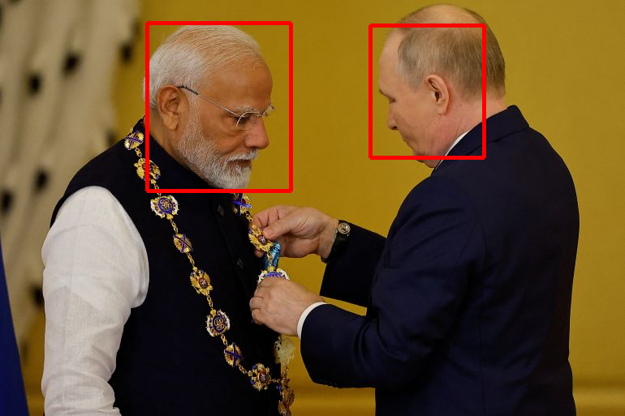

Get Accurate Insights ofImages Instantly
Visual Genius is a Machine Learning Web Application to Analyse Images and Get Meaningful Insights
Optical Character Recognition(OCR)
Functionality
OCR (Optical Character Recognition) detects and converts text from images, PDFs, and scanned documents into machine-readable text
Practical Applications
- Digitizing paper documents for easy storage and retrieval
- Automating data entry from forms and invoices
- Extracting text from images for editing and searching

Object Localization
Functionality
Object localization involves identifying and locating specific objects within an image or a scene.
Practical Applications
- In robotics for task execution
- For identifying pedestrians and traffic signs
- in environmental monitoring for wildlife tracking

Landmark Detection
Functionality
This feature allows developers to extract information about recognized landmarks such as their names and geographic coordinates from images.
Practical Applications
- Tourism and Travel
- Organizing images based on recognized landmarks
- Management, marketing, and urban development.

Brand Recognisation
Functionality
Logo detection refers to the process of identifying and locating logoswithin images or videos using computer vision techniques
Practical Applications
- Monitoring and analyzing brand presence and visibility across images
- Recognizing product logos for inventory management
- Detecting unauthorized use or infringement of logos

Face Recognisation
Functionality
Locates faces with bounding polygons, and identifies specific facial "landmarks" such as eyes, ears, nose, mouth, etc
Practical Applications
- Detect driver fatiguby analyzing facial expressions, helping to prevent accidents.
- Improve interaction between robots and humans by enabling robots to recognize and respond to human faces and emotions
- Automatically take attendance in classrooms by detecting and recognizing student faces.

People Detection
Functionality
Celebrity detection is a specialized application of entity detection,
focused on identifying famous individuals (celebrities) in various types of media
focused on identifying famous individuals (celebrities) in various types of media
Practical Applications
- Social Media and Influencer Marketing
- Track high-profile individuals in public spaces.
- News and Journalism
